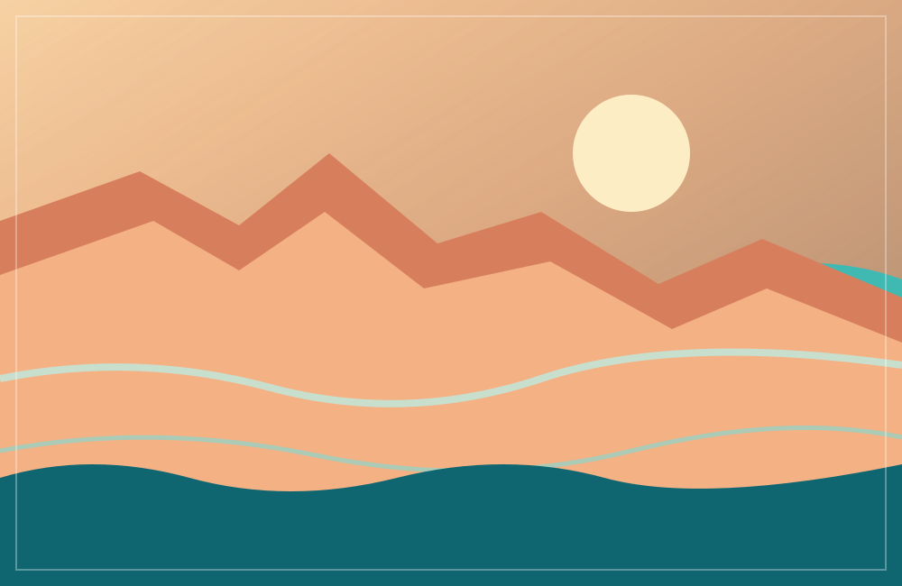
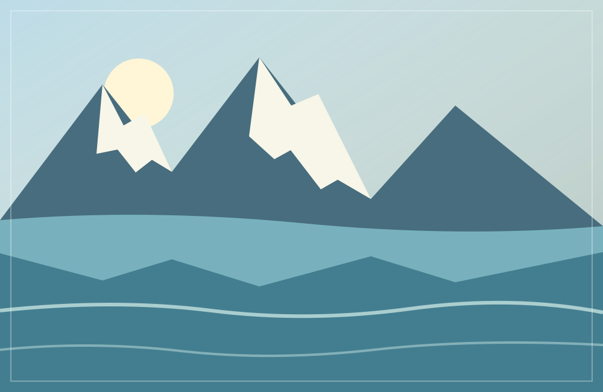
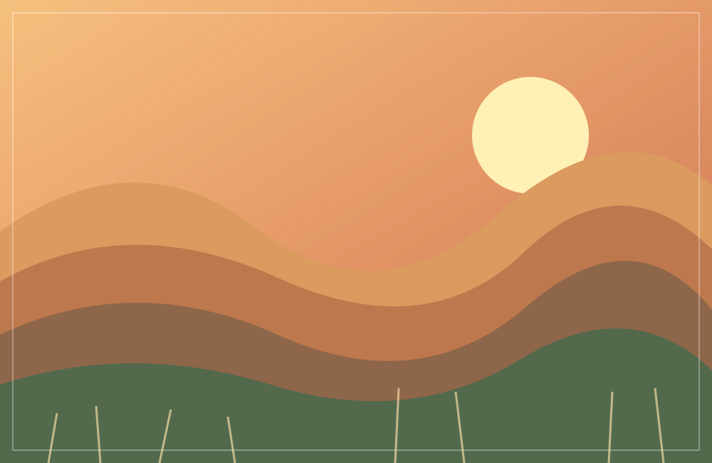
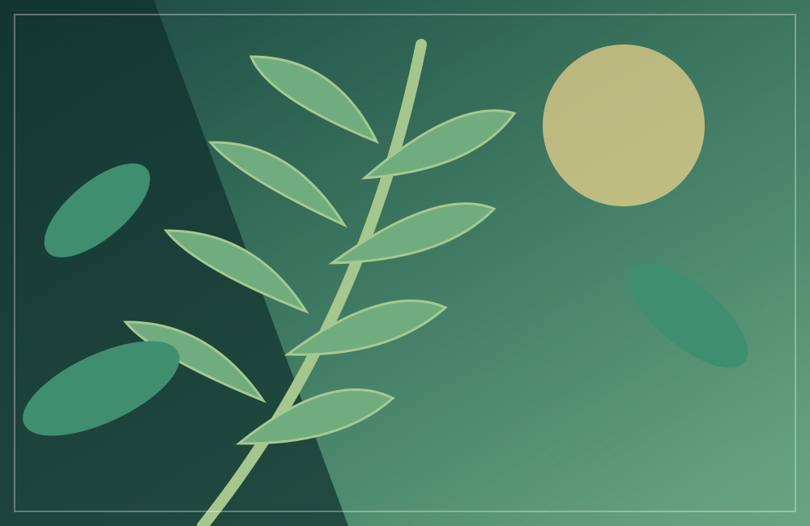
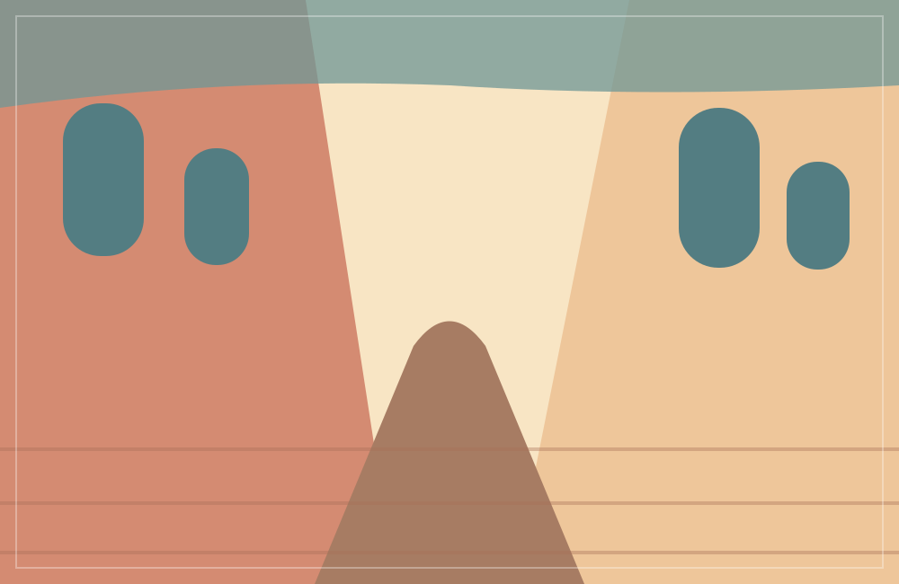
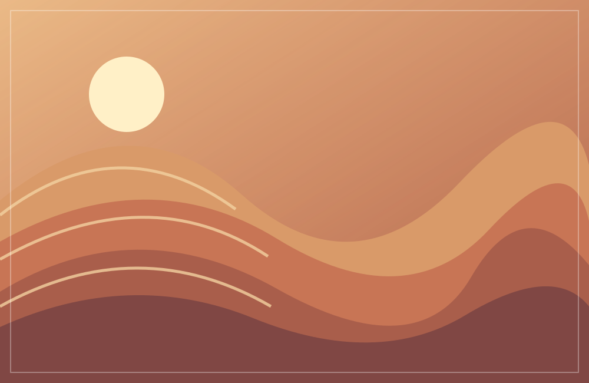

COLLECTED PLACES · ORIGINAL ILLUSTRATIONS
Look a little
closer.
Nine quiet scenes shaped by light, color, and the places we carry with us. Explore the collection on any screen; the layout and color palette adapt to your device preferences.
The landscape collection
09 FRAMES DIGITAL FIELD JOURNAL

Coastal light
Cliffs soften into blue water along a quiet stretch of shore.

Alpine reflection
Snow-touched peaks double themselves in a still mountain lake.

Golden hour
The last sunlight warms a layered countryside of hills and grasses.

Fern study
A close look at fern leaves and rich forest greens.

Old town geometry
Pastel buildings and tall windows frame a sunlit old-town lane.
Blue current
Light moves across deep ocean blues and turquoise currents.

Dune lines
Wind-shaped desert dunes form flowing lines of clay and apricot.
Frosted valley
Icy mountain shapes meet a pale, quiet winter valley.
Aurora night
Green northern lights drift over dark mountains and still water.